A JavaScript egy böngészőbeli scriptnyelv, azaz egy interpreter alakítja át gépi kóddá az általunk megírt forráskódot. Ezt az interpretert JavaScript motor-nak (JavaScript Engine) is nevezik, és minden böngészőbe alapból be van építve. Ebből következően nem kell sehonnan letölteni és telepíteni a nyelvet!
A nyelvet Brendan Eich alkotta meg 1995-ben.
A nyelv hivatalos specifikációja (1997) és neve: ECMAScript
Miért egyedi a JavaScript?
Alapvetően a következő feladatok ellátására találták ki a JavaScript-et:
clear_all Az oldal HTML és CSS tartalmának kezelése (törlés, változtatás, hozzáadás).
clear_all Az oldalon történő edemények kezelése (kattintás, görgetés, billentyűleütés stb.).
clear_all Távoli szerverekről adatlekérés (AJAX).
clear_all Cookie-k kezelése.
clear_all Böngészőoldalon adatok tárolása (localStorage).
És ami nem megy alapértelmezetten:
clear_all Nincs közvetlen hozzáférése a merevlemezeken tárolt információkhoz, az operációs rendszer függvényeihez, a CPU-hoz. Csak bizonyos műveletek végrehajtása esetén (felhasználó hozzájárulása, drag-and-drop, <input> címkén keresztül stb.).
clear_all Nincs közvetlen hozzáférése a kamerához, mikrofonhoz stb.
clear_all Egyik weblap nem látja a másikat a böngészőben, ha nem ugyanonnan erednek (Same-Origin-Policy).
clear_all Távoli szerverekhez való hozzáférés csak a szolgáltató engedélyével.
Erre két lehetőségünk van.
Sok helyen a <head> elemben is látható, de ide csak a "harmadik féltől származó" (third-party) script-állományok kerüljenek! Ezt nem mi írtuk, hanem valahonnan betöltjük és használjuk.
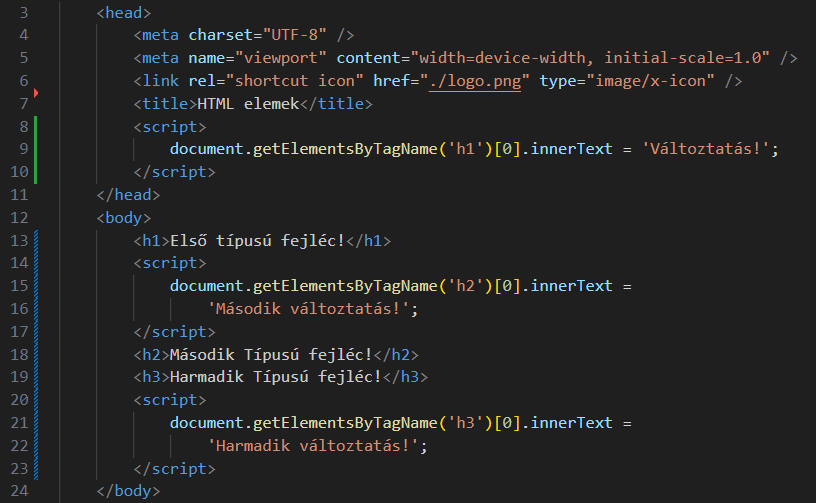
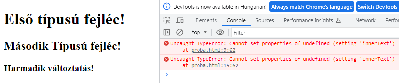
Szintaxis:
<script src='elérés'></script>
A JavaScript állományokat a .js kiterjesztéssel mentjük el!
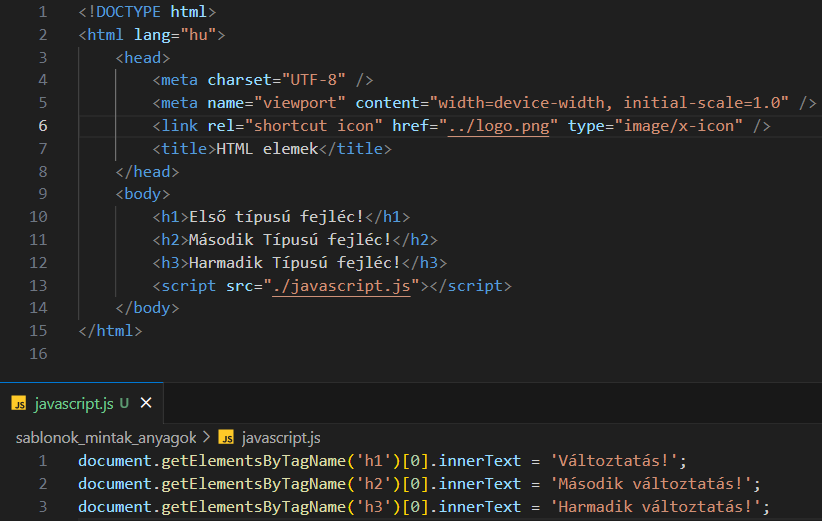
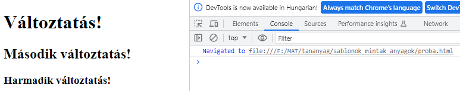
Külső JavaScript állományt importáló <script src='elérés'></script> elembe nem lehet JavaScript kódot írni!
Mivel a JavaScript alapvetően böngészőre optimalizált nyelv, ezért az ott rendelkezésére álló eszközöket használja.
Nézzük egy másik változatát:
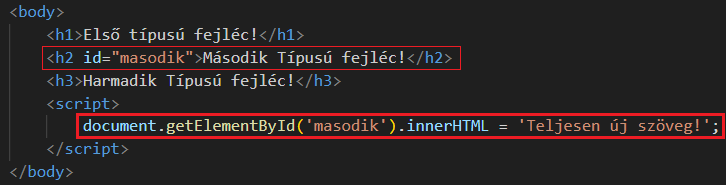
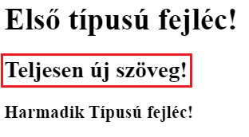
A többi hasonló függvénnyel később fogunk megismerkedni.
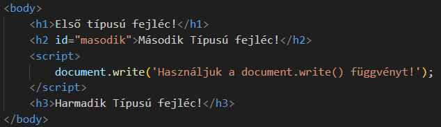
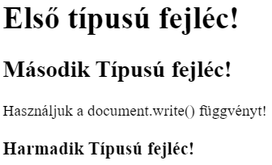
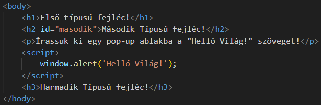
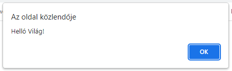
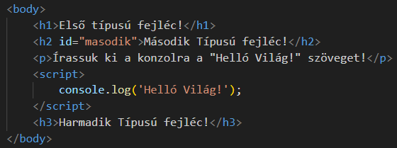
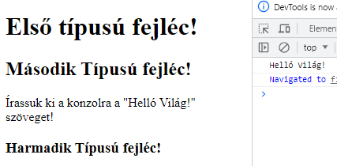
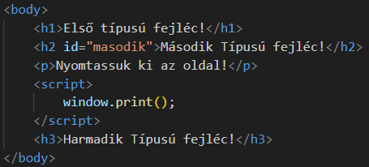
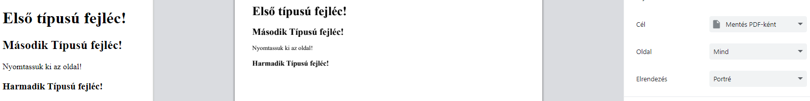